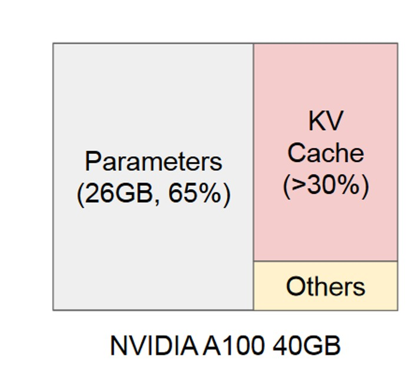
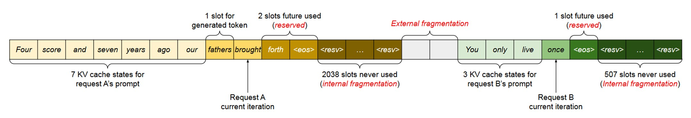
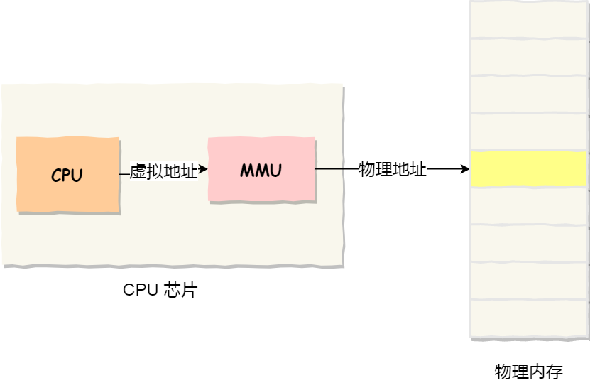
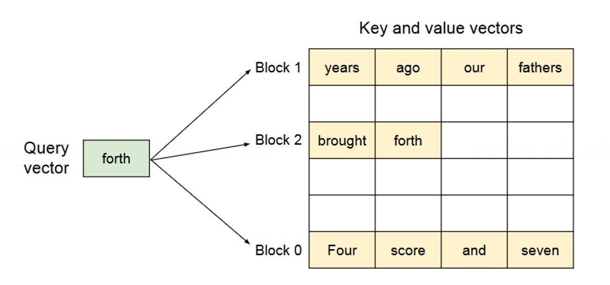
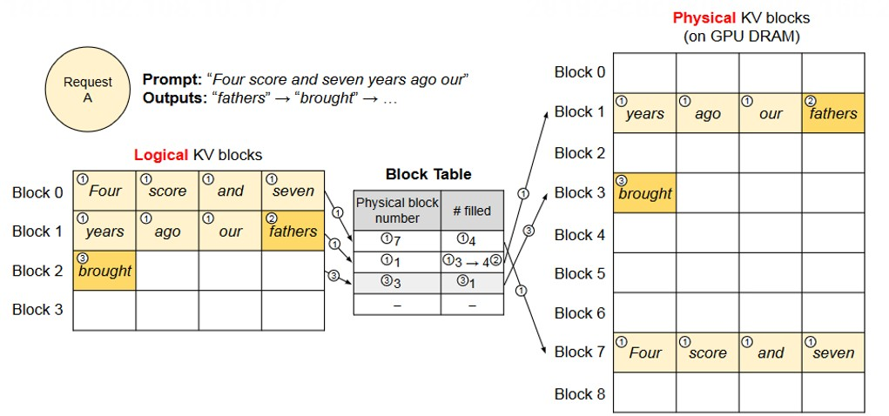
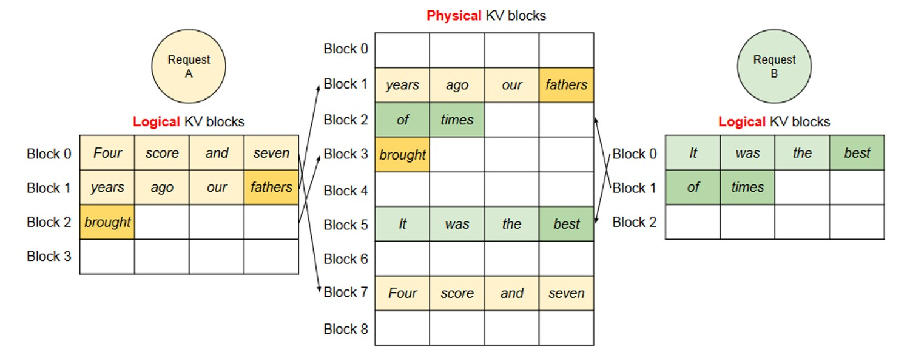
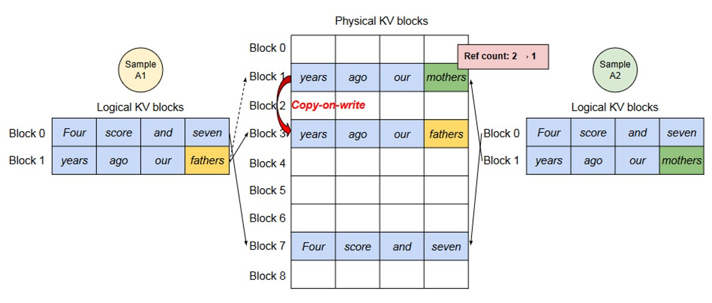
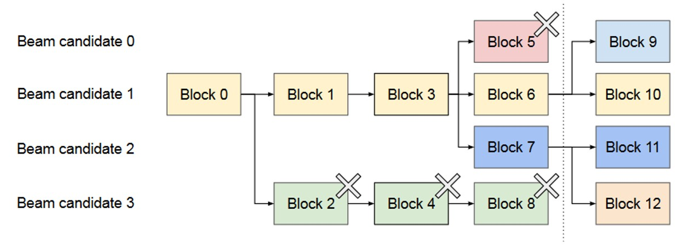
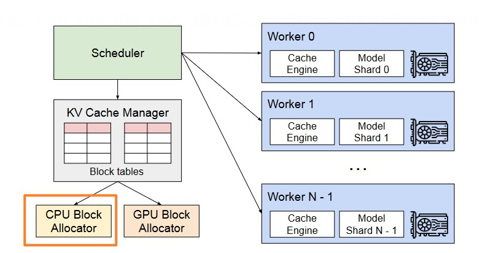
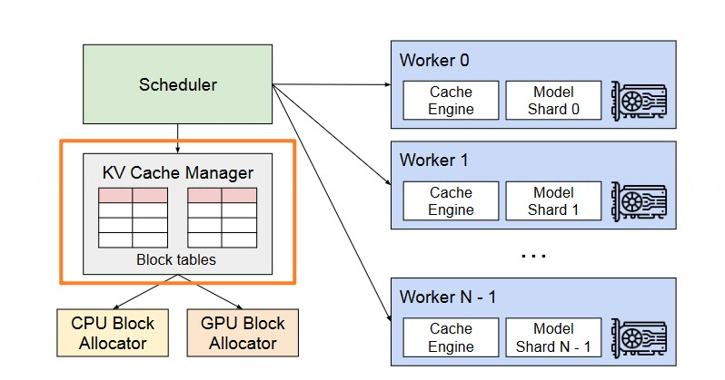

Paged Attention 原理#
大模型推理的内存管理挑战#
内存管理挑战#

大模型推理中，处理推理请求的数量受到 GPU 内存容量的限制，也就是说，推理服务系统的吞吐量是 memory-bound，克服这个内存限制需要解决以下内存管理方面的挑战：
KV Cache 内存大。KV Cache 的大小随着请求数量的增加而迅速增长，如图所示，KV Cache 所占内存接近大模型参数的一半。
复杂的解码策略。大模型推理有多种解码策略，每种算法对内存管理的影响各不相同。
输入与输出序列长度未知。在大模型推理中，输入 prompt 与最终输出长度是不确定的。
常规内存管理方式与问题#

大部分框架将同一个请求的KV Cache连续存储，按照（batch_size, max_seq_len）这样的的固定尺寸预先分配内存，这样的内存分配方式会造成三类内存浪费：
为未来Token预留的空间。
由于为潜在的最大序列长度过度预留而导致的内部碎片。
由内存分配器导致的外部碎片。
Paged Attention 原理#
为了解决传统静态分配内存时造成的内存浪费问题，vllm提出了Paged Attention算法，动态地为请求分配KV cache显存，提升显存利用率。
操作系统虚拟内存概念#
Paged Attention的思想来源于操作系统中的虚拟内存与分页技术。因此我们先来简要回顾这一部分内容。
操作系统的虚拟内存机制为每个程序提供了一个巨大且连续的私有地址空间，这被称为“虚拟地址空间”。然而，在物理内存中，这些数据实际上被存储在**任意位置、不连续的物理页面（Physical Page）**中。

系统通过一个名为**页表（Page Table）**的核心数据结构来建立这两者之间的映射关系。页表就像一本地址翻译词典，记录了每个虚拟页面对应哪个物理页面。
这个机制带来了两大好处：
消除外部碎片：由于数据可以被存储在任意可用的物理页面中，操作系统不再需要寻找一大块连续的物理内存。只要物理内存的总空闲量足够，程序就能运行，从而极大地提高了内存利用率。
灵活的内存管理：数据可以在物理内存和硬盘之间轻松地“换入”（Page-in）和“换出”（Page-out），实现了远超物理内存容量的内存空间，并且可以实现高效的写时复制（Copy-on-Write）等高级功能。
这种“逻辑上连续，物理上分散”的核心思想，为我们解决其他领域的资源管理难题提供启发。
Paged Attention算法#
在回顾了操作系统中的虚拟内存技术之后，我们再来看paged attention算法，它将操作系统中 “逻辑连续，物理分散” 的经典思想，迁移到了GPU显存管理这一场景，以此解决KV Cache带来的内存浪费问题。

PagedAttention算法的核心内容如下：
它不再为每个序列预留一块庞大而连续的内存。相反，它将每个序列的KV Cache都划分为许多个固定大小的 “块”（Block）。每一个块都可以存储固定数量Token的Key和Value向量（例如，16个Token）。这些块在物理显存中可以存储在任意不连续的位置。
为了管理这种映射关系，PagedAttention为每个序列引入了一个名为 “块表”（Block Table） 的数据结构。这个块表的作用，就如同操作系统中的“页表”，它维护着从序列的“逻辑块”到显存中“物理块”的映射。
接下来，让我们通过实际的推理示例，来直观地感受PagedAttention的完整工作流程。
处理单个推理请求#

如图所示，推理的请求prompt为“Four score and seven years ago our”。 首先是Prefill阶段【对应图中步骤1】：
划分逻辑块：针对拿到的prompt按照block大小划分逻辑块
映射物理块：用一张block table记录逻辑块和物理块的映射关系（其中
Physical block number表示映射关系，# filled表示物理块上被填满的槽位编号）
接下来是Decode阶段【对应图中步骤2/3】
计算attention，生成第一个token fathers
更新逻辑块，物理块和block table
分配新的逻辑块和物理块：当fathers填入后，逻辑块1已经装满，需要开辟新的逻辑块2，更新对应的物理块和block table
同时处理多个推理请求#

处理多个推理请求时与单个请求类似。如图所示，两个序列的逻辑块分别映射到不同的物理块，两个序列的相邻逻辑块在物理GPU内存中不需要连续，一旦一个请求完成，其KV块可以被释放以存储其他请求的KV缓存。
不同解码策略下的应用#
在前面我们了解了PagedAttention原理的基本流程，但是在实际的大模型场景中，有很多更加复杂的解码策略，接下来我们将介绍PagedAttention在不同解码策略下的表现。
解码策略——Parallel Sampling#
Parallel Sampling：LLM对于一个prompt产生多个采样输出，用户可以从各种候选中选择自己喜欢的输出。

如图所示就是一个parallel sampling的例子。我们可以看到两个输出可以共享一个提示，所以在prefill阶段，我们只需要预留一个prompt的空间，两个序列的prompt的逻辑块映射到相同的物理块。由于单个物理块可以映射到多个逻辑块，因此我们需要为每个物理块引入一个reference count进行计数。
在decoding阶段，由于两个序列新产生的token不同，因此需要单独存储KV缓存。vllm对需要多序列修改的物理块实现了copy-on-write机制，具体来说，图中当样本A需要将mothers写入block 1的最后一个逻辑块时，vllm识别除对应的物理块的reference count大于1，因此它会分配一个新的物理块（block 3），复制block 1中的信息，并将block 1的引用次数减少到1。
解码策略——Beam Searching#
Beam Search：在每个decode阶段，产生top k个token（这里k也被称为束宽）。然后再把这top k个序列喂给模型，假设词表的大小为|V|，那么在下一时刻，就要在k*|V|个候选者中再选出top k，以此类推。束搜索在LLM中被广泛使用，因为它减轻了完全遍历的计算复杂度。

图中所展示的就是k=4的情况下的束搜索示例。我们可以看到，与并行解码不同的是，束搜索不仅可以共享初始提示块，还可以在解码过程中跨不同候选块共享其他块，而且共享模式随着解码过程的进行不断发生变化。
调度与抢占#
上述章节讲述了如何使用paged attention是如何优化kv cache显存分配的，现在我们从vllm这个推理系统的角度， 探究vllm时如何对推理请求进行调度的。
当有一堆请求来到vllm服务器上，vllm首先需要有一个原则来安排以何种顺序执行这些请求，在vllm中，采用的是如下调度策略：
先到的请求先服务（FCFS）。保证了公平性并防止了饥饿。如有抢占的需要，后来的请求先被抢占。
如有抢占的需要，后来的请求先被抢占。LLM的prompt可能在长度上有很大的变化，而最终的输出长度是未知的。 当我们采用动态分配显存的方式时，由于没有为每个prompt预留充足的显存空间，可能出现在某一个时刻，显存已经被打满， 而此时所有的prompt都还没有做完推理的情况，为了推理服务能够继续运行下去，vllm需要暂停这堆请求中最后到达的那些请求的推理，同时将它们相关的KV cache从gpu上驱逐。以便为更早到达的请求留出足够的gpu空间，让它们完成推理任务。vllm采用的是all-or-nothing策略，即释放被抢占请求的所有block。
对于这些被抢占的任务，vLLM需要在gpu充足时，重新恢复这些被驱逐的块。对此vllm设计了两种策略恢复被驱逐的块。
Swapping（交换）:这是大多数虚拟内存实现所使用的经典技术，它将被删除的页复制到磁盘上的交换空间中。对于这个任务，vllm将被驱逐的块拷贝到CPU内存中。如下图所示，除了GPU块分配器外，vLLM还包括一个CPU块分配器，用于管理交换到CPU RAM中的物理块。等到gpu显存充足时，再将这些block从CPU中加载到GPU中。

Recomputation（重计算）：当任务被抢占时，我们也可以不做交换，直接在GPU中释放相应的block，等到GPU显存充足时再重新开始推理。
两种方式的比较
vLLM同时支持重计算和交换作为其恢复机制。并对两种方式的性能进行评估，结果表明在块大小较小的情况下，交换会带来过多的开销。这是因为较小的分块大小往往导致CPU和GPU之间存在大量的小数据传输，限制了PCIe的有效带宽。相比之下，重计算的开销在不同的块大小之间保持不变。因此，当块较小时，重计算更有效；当块较大时，交换更有效，因为重计算开销较大。
分布式场景内存管理#
随着模型规模的急剧增长，单张GPU已无法容纳整个LLM的参数。因此，必须采用**模型并行（Model Parallelism）**技术，将模型切分到多张GPU上协同工作。这就需要一个能够处理分布式内存的内存管理器。 vllm因此设计了一个调度器，其核心思想可以概括为：“中心化内存管理，分布式计算执行”。具体设计如下：

如图所示，vllm中有一个中央KV Cache管理器，负责计算和管理每张卡上KV Cache逻辑块到物理块的映射表。
所有GPU Worker共享映射关系：调度器会将为请求分配好的Block Table广播给所有参与计算的GPU。每张gpu接收到相关信息后，负责管理自己gpu上的KV block。
Attention算子适配#
PagedAttention通过分页机制巧妙地管理内存，但也引入了一个挑战：逻辑上连续的KV Cache在物理上却分散存储。传统的GPU计算库专为处理连续内存而优化，直接应用于这种非连续数据会造成严重的性能瓶颈。 为了解决这个问题，vLLM、直接开发了一系列定制化的高性能GPU Kernel，让计算直接适配这种非连续的内存布局。主要包含三大优化：
融合的KV Cache写入操作 在每个生成步骤中，新的KV Cache需要被切分并写入到指定的物理块中。vLLM将这一系列操作（分割、重塑、写入）融合（Fuse）成一个单一的GPU Kernel。这样做减少了CPU与GPU之间的通信开销，提高了写入效率。
支持非连续内存的注意力计算 这是最核心的优化。vLLM对注意力计算Kernel进行了改动，使其能够：
直接读取Block Table：Kernel在计算时能“实时”地根据逻辑块索引查找到分散的物理块地址，并直接从中读取数据进行注意力计算。这避免了在计算前耗时地将数据拷贝到连续内存中。
保持高效内存访问：Kernel通过线程调度设计，确保了即使数据物理上不连续，也能实现高效的“合并内存访问”，充分利用显存带宽。
批处理的写时复制（Copy-on-Write） 在Beam Search等场景中，需要复制序列。PagedAttention的写时复制（CoW）机制仅在必要时才拷贝物理块。当需要同时拷贝多个分散的块时，vLLM使用一个批处理拷贝Kernel，将多次小数据拷贝合并为一次GPU任务，显著降低了操作开销。
小结与思考#
常规大模型内存管理方式内存效率极低
Paged Attention算法用类似操作系统管理内存的方式管理KV Cache
vllm推理框架基于paged attention算法实现，在多种场景下表现优异
引用与参考#
https://zhuanlan.zhihu.com/p/691038809
https://arxiv.org/pdf/2309.06180
https://zhuanlan.zhihu.com/p/673284781